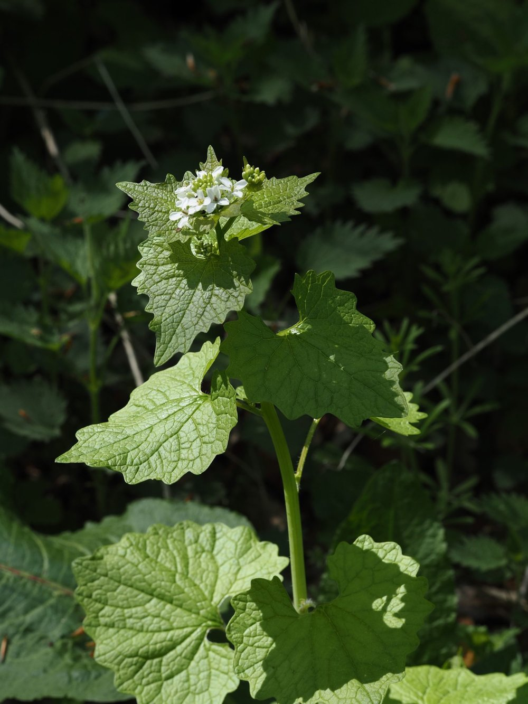

Knoblauchsrauke


Zwei Chemie-Arsenale in einer Pflanze
Knoblauchsrauke ist ein Kreuzblütler – verwandt mit Raps, Senf und Kresse – und enthält wie diese Senföl-Glycoside zur Abwehr von Fraßfeinden. Das Besondere: Sie produziert zusätzlich schwefelhaltige Verbindungen, die denen von Lauchgewächsen (Knoblauch, Zwiebel) verblüffend ähnlich sind. Beim Verletzen der Blätter setzt ein enzymatischer Prozess den charakteristischen Duft frei – eine Doppelverteidigung, die Raupen und andere Pflanzenfresser meist meiden.
Heimisch hier, invasiv dort
In Europa ist die Knoblauchsrauke eine unauffällige Säumepflanze, eingebunden in ihr heimisches Ökosystem. In Nordamerika gilt sie dagegen als hochaggressive invasive Art: Im 19. Jahrhundert als Küchenkraut eingeführt, verdrängt sie dort ganze Laubwald-Ökosysteme. Ihre Wurzeln scheiden Stoffe aus, die Mykorrhiza-Pilze hemmen – und damit Bäume schwächen. Ein Lehrstück darüber, wie eine Art im falschen Kontext zur Plage werden kann.